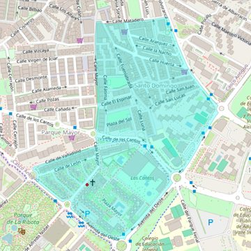

Virgen del Alba
- Arciprestazgo
- Alcorcón
- Población
- Alcorcón
- Dirección postal
- c/ Mayor, 97
- Código postal
- 28922
- Extensión
- 0,30 km² (30 ha)
- Teléfono
- 917 274 258
- Correo electrónico
- virgendelalba@gmail.com
- Información demográfica
- De la parroquia · De la población (Alcorcón) · Del arciprestazgo (Alcorcón)
- Dirección corta
- charlie-diaz-azarola.github.io/geoestadistica/p/007


Descargar mapaLímites según decreto
"Partiendo de la confluencia de la calle Polvoranca con la calle Matadero, arrancan por el eje de la calle Matadero (en dirección oeste); siguen por el eje de la calle Mayor (en dirección sur), por el eje de la calle Valladolid (en dirección suroeste), por el eje de la avenida del Oeste (en dirección sureste y noreste), por el eje de la avenida Alcalde José Aranda (en dirección noreste), por el eje de la calle Polvoranca (en dirección noroeste) hasta la confluencia con la calle Matadero, punto de partida". (Decreto de actualización de límites, 21-6-2005. B.O. de julio-agosto de 2005, pág. 805)
¿Algún dato de esta parroquia es incorrecto o ha cambiado? Comuníquenoslo.